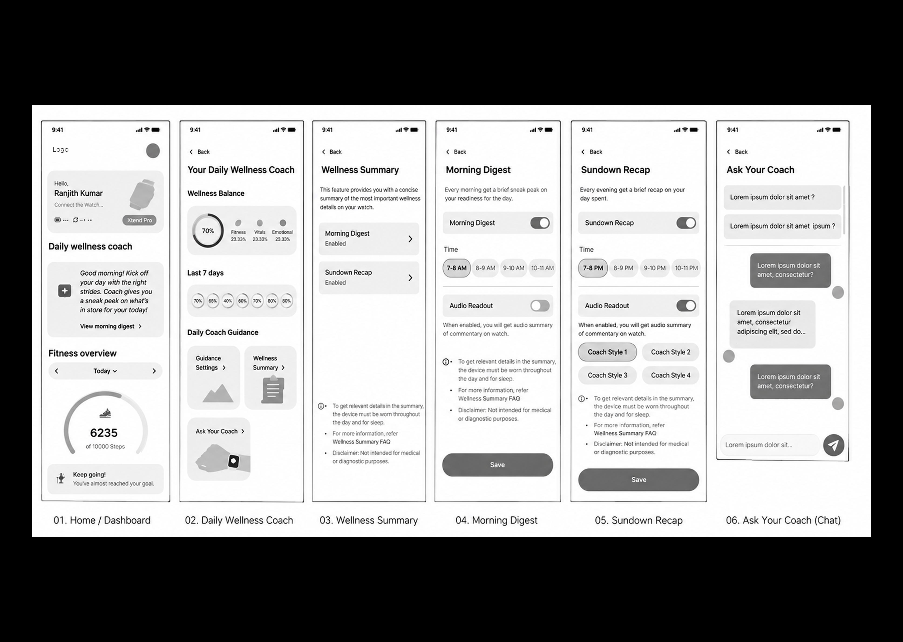
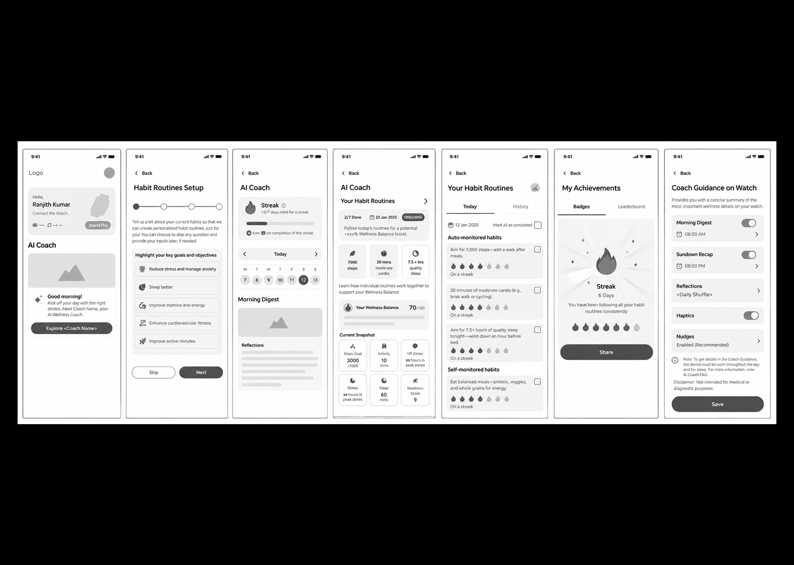
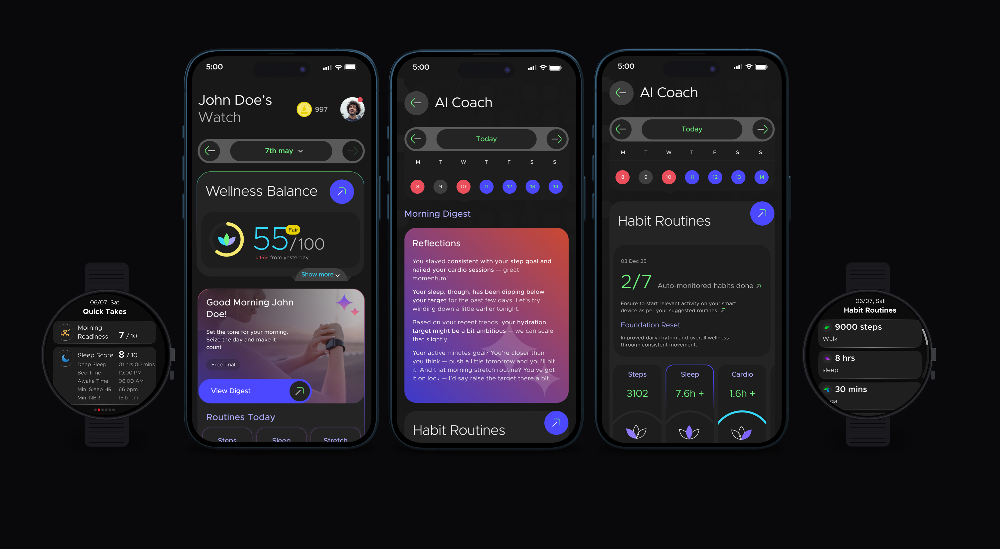
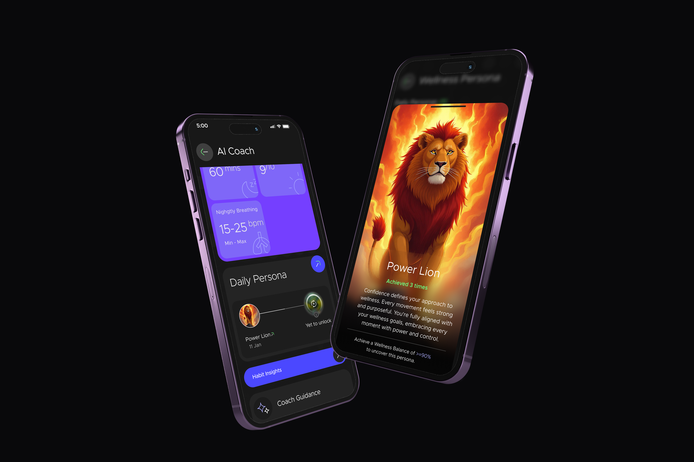

A personal coach built around your wearable data
AI Coach uses data from the wearable to give users simple guidance, habits and fitness plans.

Fitness Plans were useful, but they were not for everyone.
We wanted to make the experience more personal and easier to start. Some users have a clear fitness goal. Others want to build better everyday habits.
So the experience was built around two simple ways to start:
Fitness Plans
For users who have a clear goal, such as getting fit, losing weight or training for a run.
Habit Routines
For users who want to build habits like sleeping better, moving more or reducing stress.
Use the data to help users decide what to do next.
The experience connects wearable data to a simple daily action.
The feature changed as we worked through different ideas.
We explored different ways to bring wellness guidance, routines, reflections and fitness plans together. The final version has a clearer entry point and a more structured daily experience.

Daily Wellness CoachExplored daily guidance, Wellness Balance and “Ask Your Coach”.

Habits and guidanceAdded routines, reflections, streaks and scheduled coaching.

AI CoachBrought together Habit Routines, Fitness Plans, Wellness Balance and daily guidance.
One coach, two ways to begin.
The first step is choosing what the user wants help with.
Users choose goals such as sleeping better, reducing stress, improving stamina or becoming more active. The coach then suggests habits based on those goals.
Users can choose goals such as getting fit, getting lean, losing weight or training for a marathon. A plan, such as a 7 km run plan, can then guide them.
From setup to daily guidance.
The journey takes users from discovering AI Coach to building a daily habit of checking in and taking action.
Discover
User finds AI Coach from the app.
Choose a focus
User chooses Habit Routines or Fitness Plans.
Set up
User shares their goals and preferences.
Get guidance
AI Coach gives personalised habits, plans and daily guidance.
Take action
User follows the guidance and tracks progress through the wearable.
Review & improve
Morning Digest and Sundown Recap help the user understand their day and what to focus on next.
The AI needed clear rules to make the experience useful.
My work was not about building the AI model. It was about deciding how the AI should appear and behave in the product.
Making everyday habits part of the wellness journey.
Habit Routines connect everyday actions to the user's Wellness Balance. Each habit shows which wellness pillars and metrics it can improve, helping users understand what to do and why it matters.
Not every habit needs a checkbox.
Some habits can be measured by the device. Others cannot. We separated the two so users do not have to manually mark everything they do.
Let the device do the work.
Steps, activity and sleep can be measured by the device. These habits can be used for streaks and rewards.
Keep manual tracking simple.
Habits such as eating balanced meals are not measured by the device, so users can update them when needed.
Make progress easy to see.
The experience uses streaks, badges and boAt Coins to make regular progress feel rewarding.
The coach is useful at different times of the day.
Morning Digest
A quick look at readiness for the day, based on sleep, readiness and recent activity.
Default time in the final design: 08:00 AMCoach Guidance
Users can see their routines, plans, Wellness Balance and progress in the app.
App = more detailSundown Recap
A short recap of the day, including progress, milestones and reflections.
Default time in the final design: 08:00 PMThe app gives more detail. The watch gives quick updates.
The watch focuses on short updates that can be understood at a glance. Morning Digest and Sundown Recap can be scheduled, with audio and haptic options explored in the designs.

The score changes during the day. The persona should not.
The Wellness Balance score can change as new data comes in. If the persona changed every time the score changed, it would not feel like a daily reward.
Solution: During the day, the persona stays locked. After the day ends, the final score decides the persona for that day.
The concept explored animal personas such as Power Lion, Snooze Bear, Zen Owl, and many more. The persona can also be used as a watch face.
I worked across the full UI experience.
I designed the AI Coach UI, worked with the team on UX decisions, explored different directions and checked the final UI before launch.